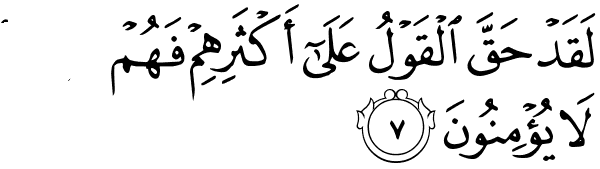
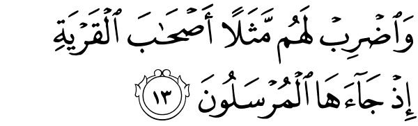

Dengan Nama Allah yang Maha Pengasih dan Maha Penyayang.
1. Yaa Siin
Yaa siin
2. Wal Qur'anil hakiim
Demi Al Qur'an yang penuh hikmah,
3. Innaka laminal mursaliin
Sesungguhnya kamu salah seorang dari Rasul-rasul,
4. 'Alaa shirathim mustaqiim
(yang berada) di atas jalan yang lurus,
5. Tanziilal 'aziizir rahiim
(sebagai wahyu) yang diturunkan oleh Yang Maha Perkasa lagi Penyayang,
6. Li tunzira qauman ma undzira aabaauhum fahum ghaafiluun
agar kamu memberi peringatan kepada kaum yang bapak-bapak mereka belum pernah diberi peringatan, karena itu mereka lalai.

7. Laqad haqqal qaulu 'alaa aktsarihim fahum laa yu'minuun
Sesungguhnya telah pasti berlaku perkataan (ketentuan Allah) terhadap kebanyakan mereka, karena mereka tidak beriman.
8. Inna Ja'alna fii a'naqihim aghlaalan fahiya ilal adzqani fahum muqmahuun
Sesungguhnya Kami telah memasang belenggu di leher mereka, lalu tangan mereka (diangkat) ke dagu, maka karena itu mereka tengadah.
9. Wa-ja 'alna min baini aidiihim saddan wa min khalfihim saddan fa aghsyainaahum fahum la yubshirrun
Dan Kami adakan di hadapan mereka dinding dan di belakang dinding (pula), dan Kami tutup (mata) mereka sehingga mereka tidak dapat melihat.
10. Wa sawaa-un 'alaihim a-andzartahum amlam tunzirhum laa yu'minuun
Sama saja bagi mereka apakah kamu memberi peringatan kepada mereka ataukah kamu tidak memberi peringatan kepada mereka, mereka tidak akan beriman.
11. Innama tunziru manittaba-adz dzikra wa khasyiyar-rahmana bil-ghaibi fabasy-syirhu bi magfiratin wa ajrin kariim
Sesungguhnya kamu hanya memberi peringatan kepada orang-orang yang mau mengikuti peringatan dan yang takut kepada Tuhan Yang Maha Pemurah walaupun dia tidak melihatnya. Maka berilah mereka kabar gembira dengan ampunan dan pahala yang mulia.
12. Innaa nahnu nuhyil-mautaa wanaktubu maa qaddamuu wa aatsaarahum, wa kulla syai-in ahsainaahu fii imaamim mubin
Sesungguhnya Kami menghidupkan orang-orang mati dan Kami menuliskan apa yang telah mereka kerjakan dan bekas-bekas yang mereka tinggalkan. Dan segala sesuatu Kami kumpulkan dalam Kitab Induk yang nyata (Lauh Mahfuzh).

13. Wadlrib lahum matsalan ash-haabal-qaryati idz jaa-ahal-mursaluun
Dan buatlah bagi mereka suatu perumpamaan, yaitu penduduk suatu negeri ketika utusan-utusan datang kepada mereka
14. Idz arsalnaa ilaihimuts naini fakadz dzabuuhumaa fa'azzaznaa bi tsaalitsin faqaaluu innaa ilaikum mursaluun
(yaitu) ketika Kami mengutus kepada mereka dua orang utusan, lalu mereka mendustakan keduanya; kemudian Kami kuatkan dengan (utusan) yang ketiga, maka ketiga utusan itu berkata:' Sesungguhnya kami adalah orang-orang yang-xx diutus kepadamu '.
15. Qaaluu ma antum illaa basyarum mits-lunaa wa maa anzalarrahmaanu min syai-in in antum illaa takdzibuun
Mereka menjawab:' Kamu tidak lain hanyalah manusia seperti kami dan Allah Yang Maha Pemurah tidak menurunkan sesuatupun, kamu tidak lain hanyalah pendusta belaka '.
16. Qaalu rabbunaa ya'lamu inna ilaikum la mursaluun
Mereka berkata:' Tuhan kami mengetahui bahwa sesungguhnya kami adalah orang yang diutus kepada kamu.
17. Wa maa 'alaina illal balaqhul-mubiin
Dan kewajiban kami tidak lain hanyalah menyampaikan (perintah Allah) dengan jelas '.
18. Qaalu innaa tathayyarnaa bikum lail lam tantahuu lanarjuman-nakum walayamas-sannakum minnaa 'adzaabun aliim
Mereka menjawab:' Sesungguhnya kami bernasib malang karena kamu, sesungguhnya jika kamu tidak berhenti (menyeru kami), niscaya kami akan merajam kamu dan kamu pasti akan mendapat siksa yang pedih dari kami '.
19. Qaaluu thaa'irukum ma'akum, a-in dzukkirtum, bal antum qaumum musrifuun
Utusan-utusan itu berkata:' Kemalangan kamu itu adalah karena kamu sendiri. Apakah jika kamu diberi peringatan (kamu bernasib malang)? Sebenarnya kamu adalah kaum yang melampaui batas '.
20. Wa jaa-a min aqshal-madiinati rajuluy yas-'aa qaala yaa qaumit tabi'ul mursaliin
Dan datanglah dari ujung kota, seorang laki-laki dengan bergegas-gegas ia berkata:' Wahai kaumku, ikutilah utusan-utusan itu,
21. Ittabi'uu man laa yas-alukum ajran wa hum muhtaduun
ikutilah orang yang tiada minta balasan kepadamu; dan mereka adalah orang-orang yang mendapat petunjuk.
22. Wa maa liya laa a'budul-ladzi fatharanii wa ilaihi turja'uun
Mengapa aku tidak menyembah (Tuhan) yang telah menciptakan dan yang hanya kepada-Nya kamu (semua) akan dikembalikan?
23. A-attakhidzu minduunihii aalihatan in yuridnirrahmaanu bidlurril laa tughnii 'annii syafaa 'atuhum syai-aw wa laa yunqidzun
Mengapa aku akan menyembah tuhan-tuhan selain-Nya jika (Allah) Yang Maha Pemurah menghendaki kemudharatan terhadapku, niscaya syafaat mereka tidak memberi manfaat sedikitpun bagi diriku dan mereka tidak (pula) dapat menyelamatkanku?
24. Innii idzal lafii dlalaalim mubiin
Sesungguhnya aku kalau begitu pasti berada dalam kesesatan yang nyata.
25. Innii aamantu birabbikum fasma'uun
Sesungguhnya aku telah beriman kepada Tuhanmu; maka dengarkanlah (pengakuan keimanan) ku.
26. Qiilad-khulil jannata qaala yaa laita qaumii ya'lamuun
Dikatakan (kepadanya): 'Masuklah ke surga'. Ia berkata: 'Alangkah baiknya sekiranya kaumku mengetahui,
27. Bimaa ghafaralii rabbii wa ja-'alnii minal mukramiin
apa yang menyebabkan Tuhanku memberi ampun kepadaku dan menjadikan aku termasuk orang-orang yang dimuliakan'.
28. Wa maa andzalnaa 'alaa qaumihii min ba'dihii min jundim minas sama-i wa maa kunnaa munziliin
Dan Kami tidak menurunkan kepada kaumnya sesudah dia (meninggal) suatu pasukanpun dari langit dan tidak layak Kami menurunkannya.
29. In kaanat illaa shaihataw wahidatan faidzaa hum khaamiduun
Tidak ada siksaan atas mereka melainkan satu teriakan saja; maka tiba-tiba mereka semuanya mati.
30. Yaa hasratan 'alal-ibaadi ma ya'tiihim mir rasuulin illa kaanuu bihii yastahziuun
Alangkah besarnya penyesalan terhadap hamba-hamba itu, tiada datang seorang rasulpun kepada mereka melainkan mereka selalu memperolok-olokkannya.
31. Alam yarau kam ahlaknaa qablahum minalquruuni annahum ilaihim la yarji'uun
Tidakkah mereka mengetahui berapa banyaknya umat-umat sebelum mereka yang telah Kami binasakan, bahwasanya orang-orang (yang telah Kami binasakan) itu tiada kembali kepada mereka.
32. Wa in kullul lamma jamii'ul ladainaa mukhdlaruun
Dan setiap mereka semuanya akan dikumpulkan lagi kepada Kami.
33. Wa aayatul lahumul-ardlul-maitatu, ahyainaahaa wa akhrajnaa minha habban faminhu ya'kuluun
Dan suatu tanda (kekuasaan Allah yang besar) bagi mereka adalah bumi yang mati. Kami hidupkan bumi itu dan Kami keluarkan daripadanya biji-bijian, maka daripadanya mereka makan.
34. Waja-'alna fiiha jan-naatim min nakhiilin wa a'naabin wa fajjarnaa fiihaa minal-'uyuun
Dan Kami jadikan padanya kebun-kebun kurma dan anggur dan Kami pancarkan padanya beberapa mata air,
35. Liya 'kuluu min tsamarihii wa maa 'amilathu aidiihim afala yasykuruun
supaya mereka dapat makan dari buahnya, dan dari apa yang diusahakan oleh tangan mereka. Maka mengapakah mereka tidak bersyukur?
36. Subhaanalladzii khalaqal-azwaaja kullahaa mimmaa tunbitul-ardlu wa min anfusihim wa mimmaa la ya'-lamuun
Maha Suci Tuhan yang telah menciptakan pasangan-pasangan semuanya, baik dari apa yang ditumbuhkan oleh bumi dan dari diri mereka maupun dari apa yang tidak mereka ketahui.
37. Wa aayatul lahumul lailu naslakhu minhun nahaara faidzaahum mudhlimuun
Dan suatu tanda (kekuasaan Allah yang besar) bagi mereka adalah malam; Kami tanggalkan siang dari malam itu, maka dengan serta merta mereka berada dalam kegelapan,
38. Wasy-sayamsu tajrii limustaqarril lahaa dzaalika taqdiirul-aziizil 'alim
dan matahari berjalan di tempat peredarannya. Demikianlah ketetapan Yang Maha Perkasa lagi Maha Mengetahui.
39. Walqamara qaddarnaahu manaazila hatta 'aada kal'urjunil qadiim
Dan telah Kami tetapkan bagi bulan manzilah-manzilah, sehingga (setelah dia sampai ke manzilah yang terakhir) kembalilah dia sebagai bentuk tandan yang tua.
40. Lasy-syamsu yanbaghi lahaa an tudrikal qamara wa lallailu saabiqun-nahaari wa kullun fii falakin yasbahuun
Tidaklah mungkin bagi matahari mendapatkan bulan dan malampun tidak dapat mendahului siang. Dan masing-masing beredar pada garis edarnya.
41. Wa aayatul lahum annaa hamalnaa dzurriy-yatahum filfulkil masyhuun
Dan suatu tanda (kebesaran Allah yang besar) bagi mereka adalah bahwa Kami angkut keturunan mereka dalam bahtera yang penuh muatan,
42. Wa khalaqnaa lahum mim mitslihii maa yarkabuun
dan Kami ciptakan untuk mereka yang akan mereka kendarai seperti seperti bahtera itu.
43. Wa in nasya' nugriqhum falaa shariikhalahum wa laa hum yunqadzuun
Dan jika Kami menghendaki niscaya Kami tenggelamkan mereka, maka tiadalah bagi mereka penolong dan tidak pula mereka diselamatkan.
44. Illa rahmatam minna wa mataa'an ilaihiin
Tetapi (Kami selamatkan mereka) karena rahmat yang besar dari Kami dan untuk memberikan kesenangan hidup sampai kepada suatu ketika.

45. Wa idzaa qiilla lahumuttaqu maa baina aidiikum wa maa khalfakum la'alakum turhamuun
Dan apabila dikatakan kepada mereka: 'Takutlah kamu akan siksa yang di hadapanmu dan siksa yang akan datang supaya kamu mendapat rahmat', (niscaya mereka berpaling).
46. Wa maa ta'tiihim min ayatim min aayaati rabbihim illaa kaanuu 'anhaa mu'ridliin
Dan sekali-kali tiada datang kepada mereka suatu tanda dari tanda-tanda kekuasaan Tuhan mereka, melainkan mereka selalu berpaling daripadanya.
47. Wa idza qiila lahum anfiquu mimmaa razaqakumullaahu, qaalal-ladziina kafaruu lilladzina aamanuu, anuth'imu mal lau yasyaa-ullahu ath'amahuu, in an tum illaa fii dlalaalim mubiin
Dan apabila dikatakan kepada mereka: 'Nafkahkanlah sebahagian dari rezeki yang diberikan Allah kepadamu', maka orang-orang yang kafir itu berkata kepada orang-orang yang beriman: 'Apakah kami akan memberi makan kepada orang-orang yang jika Allah menghendaki tentulah Dia akan memberinya makan, tiadalah kamu melainkan dalam kesesatan yang nyata'
48. Wa yaquluuna mataa hadzal wa'du in kuntum shadiqiin
Dan mereka berkata: 'Bilakah (terjadinya) janji ini (hari berbangkit) jika kamu adalah orang-orang yang benar?'
49. Maa yandhuruuna illaa shaihataw waahidatan ta'khuzuhum wahum yakhish-shimuun
Mereka tidak menunggu melainkan satu teriakan saja yang akan membinasakan mereka ketika mereka sedang bertengkar.
50. Falaa yastathi-'uuna taushiyatan wa laa ilaa ahlihim yarji'uun
Lalu mereka tidak kuasa membuat suatu wasiatpun dan tidak (pula) dapat kembali kepada keluarganya.
51. Wa nufikha fish-shuuri fa idzaa hum minal ajdaatsi ilaa rabbihim yansiluun
Dan ditiuplah sangkakala, maka tiba-tiba mereka ke luar dengan segera dari kuburnya (menuju) kepada Tuhan mereka.
52. Qaaluu yaa wailanaa man ba'atsanaa min marqadinaa haadza maa wa-'adar-rahmaanu wa shadaqal-mursaluun
Mereka berkata: 'Aduhai celakalah kami? Siapakah yang membangkitkan kami dari tempat-tidur kami (kubur)?' Inilah yang dijanjikan (Tuhan) Yang Maha Pemurah dan benarlah Rasul-rasul (Nya).
53. In kaanat illaa saihataw waahidatan fa idzaahum jamii'ul ladaina muhdlaruun
Tidak adalah teriakan itu selain sekali teriakan saja, maka tiba-tiba mereka semua dikumpulkan kepada Kami.
54. Falyauma laa tuzhlamu nafsun syai-aw wa laa tujzauna illaa maa kuntum ta'maluun
Maka pada hari itu seseorang tidak akan dirugikan sedikitpun dan kamu tidak dibalasi, kecuali dengan apa yang telah kamu kerjakan.
55. Inna ash-haabal jannatil yauma fii syughulin faakihuun
Sesungguhnya penghuni surga pada hari itu bersenang-senang dalam kesibukan (mereka).
56. Hum wa azwajuhum fii dhilaalin 'alal araaiki muttakiuun
Mereka dan isteri-isteri mereka berada dalam tempat yang teduh, bertelekan di atas dipan-dipan.
57. Lahum fiihaa faakihatuw wa lahum maa yadda'uun
Di surga itu mereka memperoleh buah-buahan dan memperoleh apa yang mereka minta.
58. Salaamun qaulam mir rabbir rahiim
(Kepada mereka dikatakan): 'Salam', sebagai ucapan selamat dari Tuhan Yang Maha Penyayang.

59. Wamtaazul yauma ayyuhal mujrimuun
Dan (dikatakan kepada orang-orang kafir): 'Berpisahlah kamu (dari orang-orang mukmin) pada hari ini, hai orang-orang yang berbuat jahat.
60. Alam a'had ilaikum yaa banii aadama anlaa ta'budusysyaithaana innahuu lakum 'aduwwum mubiin
Bukankah Aku telah memerintahkan kepadamu hai Bani Adam supaya kamu tidak menyembah syaithan? Sesungguhnya syaithan itu adalah musuh yang nyata bagi kamu',
61. Wa ani'buudunii, haadzaa shiraathum mustaqiim
dan hendaklah kamu menyembah-Ku. Inilah jalan yang lurus.
62. Wa laqad adlalla minkum jibilan katsiran afalam takuunuu ta'qiluun
Sesungguhnya syaithan itu telah menyesatkan sebahagian besar di antaramu. Maka apakah kamu tidak memikirkan?
63. Hadzihii jahannamul lati kuntum tuu'aduun
Inilah Jahannam yang dahulu kamu di ancam (dengannya).
64. Islauhal yauma bimaa kuntum takfuruun
Masuklah ke dalamnya pada hari ini disebabkan kamu dahulu mengingkarinya.
65. Alyauma nakhtimu 'alaa afwaahihim wa tukallimunaa aidiihim wa tasyhadu arjuluhum bimaa kaanuu yaksibuun
Pada hari ini Kami tutup mulut mereka; dan berkatalah kepada Kami tangan mereka dan memberi kesaksianlah kaki mereka terhadap apa yang dahulu mereka usahakan.
66. Walau nasyaa-u lathamasnaa 'alaa a'yunihim fastabaqush-shirata fa-annaa yubshiruun
Dan jikalau Kami menghendaki pastilah Kami hapuskan penglihatan mata mereka; lalu mereka berlomba-lomba (mencari) jalan. Maka betapakah mereka dapat melihat (nya).
67. Walau nasyaa-u lamasakhnaahum 'alaa makaanatihim famastathaa'uu muddliyyaw walaa yarji'uun
Dan jikalau Kami menghendaki pastilah Kami robah mereka di tempat mereka berada; maka mereka tidak sanggup berjalan lagi dan tidak (pula) sanggup kembali.
68. Wa man nu'ammirhu nunakkishu filkhalqi afala ya'qiluun
Dan barangsiapa yang Kami panjangkan umurnya niscaya Kami kembalikan dia kepada kejadian (nya). Maka apakah mereka tidak memikirkan?
69. Wa maa 'allamnahusy-syi'ra wa maa yanbaghi lahu in huwa illa dzikruw wa Qu'aanum mubiin
Dan Kami tidak mengajarkan syair kepadanya (Muhammad) dan bersyair itu tidaklah layak baginya. Al Qur'an itu tidak lain hanyalah pelajaran dan kitab yang memberi penerangan,
70. Liyunzira man kaana hayyan wa yahiqqal qaulu 'alal kaafiriin
supaya dia (Muhammad) memberi peringatan kepada orang-orang yang hidup (hatinya) dan supaya pastilah (ketetapan azab) terhadap orang-orang kafir.
71. Awalam yarau annaa khalaqnaa lahum mimmaa 'amilat aidiinaa an'aaman fahum lahaa maalikuun
Dan apakah mereka tidak melihat bahwa sesungguhnya Kami telah menciptakan binatang ternak untuk mereka yaitu sebahagian dari apa yang telah Kami ciptakan dengan kekuasaan Kami sendiri, lalu mereka menguasainya?
72. Wadzallalnaaha lahum faminhaa rakuubuhum wa minha ya'kuluun
Dan Kami tundukkan binatang-binatang itu untuk mereka; maka sebahagiannya menjadi tunggangan mereka dan sebahagiannya mereka makan.
73. Walahum fiiha manaafi'u wa masyaribu afala yasykuruun
Dan mereka memperoleh padanya manfaat dan minuman. Maka mengapakah mereka tidak bersyukur?
74. Wattakhadzu min duunillahi aalihatan la'allahum yunsaruun
Mereka mengambil sembahan-sembahan selain Allah, agar mereka mendapat pertolongan.
75. Laa yastathi'uuna nashrahum wahum lahum jundum muhdlaruun
Berhala-berhala itu tiada dapat menolong mereka; padahal berhala-berhala itu menjadi tentara yang disiapkan untuk menjaga mereka.
76. Falaa yahzunka qauluhum inna na'lamu maa yusirruuna wa maa yu'linuun
Maka janganlah ucapan mereka menyedihkan kamu. Sesungguhnya Kami mengetahui apa yang mereka rahasiakan dan apa yang mereka nyatakan.
77. Awalam yaral-insaanu annaa khalaqnaahu min nuthfatin fa idza huwa khasiimum mubiin
Dan apakah manusia tidak memperhatikan bahwa Kami menciptakannya dari setitik air (mani), maka tiba-tiba ia menjadi penantang yang nyata!
78. Wa dlaraba lanaa matsalaw wanasiya khalqahu qaala man yuhyil 'idhaama wahiya ramiim
Dan dia membuat perumpamaan bagi Kami; dan dia lupa kepada kejadiannya; ia berkata: 'Siapakah yang dapat menghidupkan tulang-belulang, yang telah hancur luluh?'
79. Qul yuhyiihal ladzi ansya-ahaa awwala marratin wa huwa bikulli khalqin 'aliim
Katakanlah: 'Ia akan dihidupkan oleh Tuhan yang menciptakannya kali yang pertama. Dan Dia Maha Mengetahui tentang segala makhluk,
80. Allazi ja'ala lakum minasy syajaril-akhdlari naaran fa idza antum minhu tuuqiduun
yaitu Tuhan yang menjadikan untukmu api dari kayu yang hijau, maka tiba-tiba kamu nyalakan (api) dari kayu itu.'

81. Awalaisal ladzii khalaqas samaawaati wal-ardla biqaadirin 'alaa ayyakhluqa. mitslahum balaa wahuwal khallaqul 'alim
Dan tidakkah Tuhan yang menciptakan langit dan bumi itu berkuasa menciptakan yang serupa dengan itu? Benar, Dia berkuasa. Dan Dialah Maha Pencipta lagi Maha Mengetahui.
82. Innamaa amruhuu idza araada syai-an anyayaquula lahuu kun fa yakun
Sesungguhnya keadaan-Nya apabila Dia menghendaki sesuatu hanyalah berkata kepadanya: 'Jadilah!' Maka terjadilah ia.
83. Fasubhanal ladzi bi yadihii malakuutu kulli syai'in wa ilaihi turja'uun
Maka Maha Suci (Allah) yang di tangan-Nya kekuasaan atas segala sesuatu dan kepada-Nyalah kamu dikembalikan.